StoryArc
Verhalen die je buiten speelt, met je vrienden of met je collega's.
Binnenkort hier
Nieuwsgierig? Kijk vast bij De Rozen van Zilverweide.

Verhalen die je buiten speelt, met je vrienden of met je collega's.
Binnenkort hier
Nieuwsgierig? Kijk vast bij De Rozen van Zilverweide.